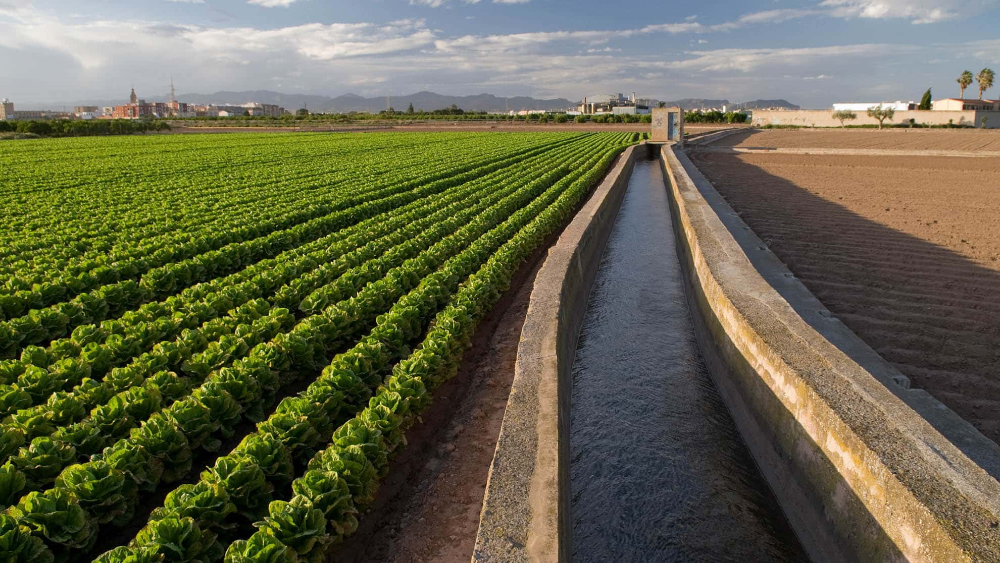

Hortatech es una iniciativa ambiciosa y transformadora que tiene como objetivo optimizar la gestión de los recursos hídricos y preservar el valioso patrimonio humano y paisajístico de la Huerta de Valencia. Con la colaboración de empresas y entidades líderes, nos comprometemos a revolucionar el uso y la conservación del agua mediante soluciones tecnológicas innovadoras y la promoción de una economía circular.
Inicio
Visión general del proyecto
Metas y objetivos
- Optimizar la gestión de los recursos hídricos en la Huerta de Valencia para lograr la sostenibilidad a largo plazo.
- Preservar y promover el patrimonio cultural y natural asociado a la huerta.
- Crear conciencia sobre el valor del agua y la importancia histórica de las infraestructuras hidráulicas.
- Fomentar el crecimiento económico, el ahorro de energía y el bienestar social a través de prácticas eficientes de gestión del agua.
Características clave y beneficios
- Control y monitorización en tiempo real: Utilizamos una solución innovadora de control en tiempo real que permite una gestión eficiente y sostenible de los recursos hídricos. Esta tecnología nos permite optimizar los costos operativos y de mantenimiento, al tiempo que aseguramos el funcionamiento efectivo de la infraestructura hídrica.
- Gestión digital del patrimonio: Hortatech tiene como objetivo desarrollar herramientas avanzadas para la preservación, difusión y gestión digital del valioso patrimonio humano, paisajístico y cultural de la huerta. A través de la digitalización y los principios de la economía circular, aprovechamos el valor digital del patrimonio hidráulico para promover el turismo cultural y la apreciación entre los ciudadanos.
- Enfoque social: Hortatech se esfuerza por crear conciencia en la sociedad sobre el valor del agua y la importancia de los agricultores en la Huerta de Valencia. Promovemos la accesibilidad universal para todos los usuarios y enfatizamos la importancia histórica y patrimonial de las infraestructuras hidráulicas para fomentar un sentido de orgullo y conexión dentro de la comunidad.
- Sostenibilidad ambiental: Mediante la implementación de tecnologías de sensores basadas en fibra óptica y un panel de control digital integral para la gestión del ciclo del agua, contribuimos activamente a los esfuerzos de conservación del agua. Nuestro objetivo es monitorear la calidad del agua, preservar los espacios naturales y parques asociados a la huerta y establecer sistemas de riego sostenibles que se alineen con los principios de flujo ecológico.